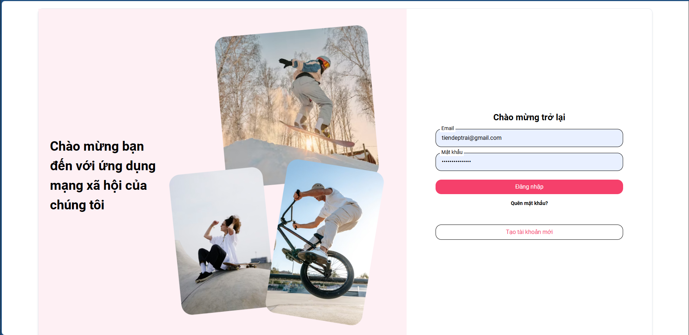
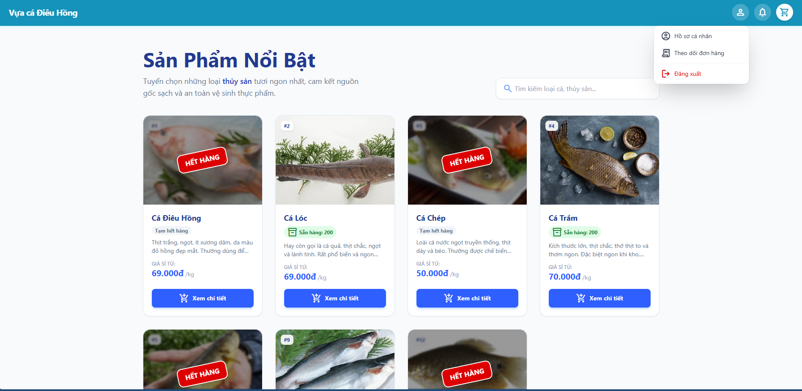
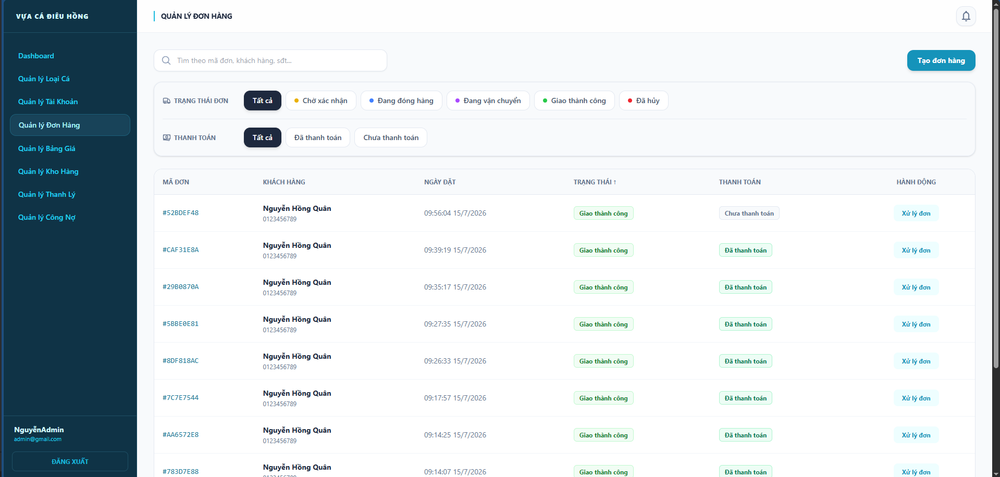
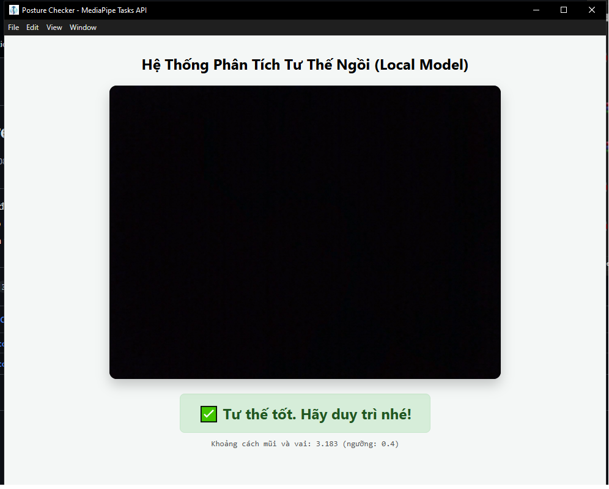
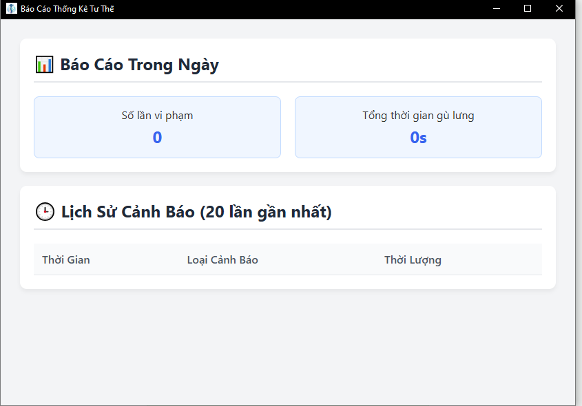

NGUYỄN HỒNG MINH QUÂN
Final-year IT student with hands-on experience building robust backend architectures in Java (Spring Boot) and deploying via Docker. Focused on creating scalable, maintainable, and high-performance server-side solutions.
Technical Skills
Programming Languages
Databases
Frameworks / Libraries
Tools
Projects

Social Media Platform
Feb 2026 - Apr 2026A 4-person team needed a social backend that could handle posts, follows, and chat without client polling draining performance, while keeping messaging decoupled from the core API.
Built JWT-authenticated REST APIs for posts, likes, and follows; pushed activity updates with Server-Sent Events instead of polling; sped up the friend-request/auto-follow flow with composite indexes; and wrote a custom reverse proxy inside Spring Boot to route chat traffic to a separate Node.js service, propagating auth headers between the two.
A working platform with a live web demo and a separate real-time chat client, deployed on Render via Docker as the backend developer on a 4-person team.
Fish Store Management Website
May 2026 - July 2026A retail business selling to both wholesale (B2B) and retail (B2C) customers needed one system for inventory, orders, and staff access — with rules like batch expiry, unit conversion, and time-based pricing too specific for an off-the-shelf e-commerce platform.
Built the backend end-to-end with Spring Boot and MySQL: JWT-based RBAC for Admin/Staff/Customer roles, FIFO batch tracking with dynamic unit conversion and perishable-goods handling, scheduled jobs plus SSE to alert staff about expiring stock, a credit/debt ledger for wholesale customers, and VNPAY for online payment.
A full-stack solution (Spring Boot + ReactJS + MySQL) that automatically adjusts order fulfillment when stock runs short instead of failing silently.




Posture Checker for Developer
Feb 2026 - May 2026Long coding sessions lead to slouching, and most posture-tracking tools either need a cloud connection or ignore that everyone's body proportions are different.
Used Google's MediaPipe Pose Landmarker (BlazePose) to read webcam input locally, added a one-time calibration step so the model adapts to each user's own sitting posture, and packaged the whole thing as an offline Electron app with SQLite for local history and a background tray process for continuous monitoring.
A 100% offline Windows app that escalates from a quiet nudge to sound and system notifications the longer you stay slouched, with a daily dashboard of incidents and total violation time.
Education
Bachelor of Information Technology
Major in Software Engineering
GPA: 3.1/4.0
Certificates
TOEIC
Score: 620
JLPT
Level: N4